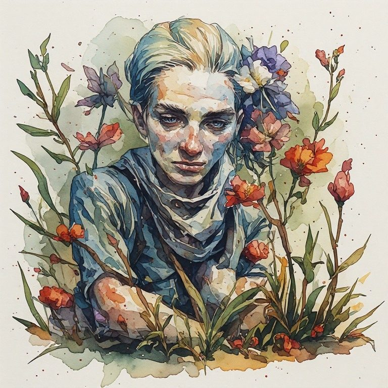

Pillar 6 Unfinished Is Honest
← Pillar 5 Build Anyway, Knowing It's Temporary · The Creative Radical Collection · Pillar 7 The Margins Reveal the Truth →
Pillar: Pillar 6 Unfinished Is Honest · Across every book
What are you still waiting to finally finish, and what have you been told it will give you?
The hunger is to arrive, to reach the finished nation, the completed project, the end of the long march. This pillar refuses the final state and calls the refusal a virtue. The unfinished is the living. A person who has stopped needing the work to be done cannot be sold a final solution.
Notice
Name a project, goal, or version of yourself that you have been treating as needing to be finished before you can rest or before you count as done. Notice the story attached to finishing it.
Practice
Write a list connected to that project or goal. At the bottom, instead of closing it with a period or a final item, write the word and, and leave it open. Do not add a neat conclusion.
Reflection
What does it feel like in your body to leave the list open on purpose?
What did you believe finishing would finally give you, and is that thing actually available now, unfinished as you are?
